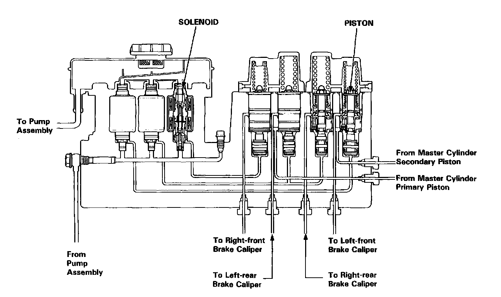

Hydraulic Control Assembly - Antilock Brakes: Description and Operation

Modulator Unit
Modulators for each wheel and solenoid valves are integrated in the modulator unit.
The modulators for front and rear brakes are of independent construction and are positioned vertically for improved maintainability. The modulators for rear brakes are provided with a Proportioning Control Valve function in order to prevent the rear wheel from locking when the anti-lock brake system is malfunctioning or the anti-lock brake system is not activated. The solenoid valve features quick response 15 ms or less).
The inlet and outlet valves are integrated in the solenoid valve unit. There are three solenoid valves, one for each front wheel, and one for both rear wheels.